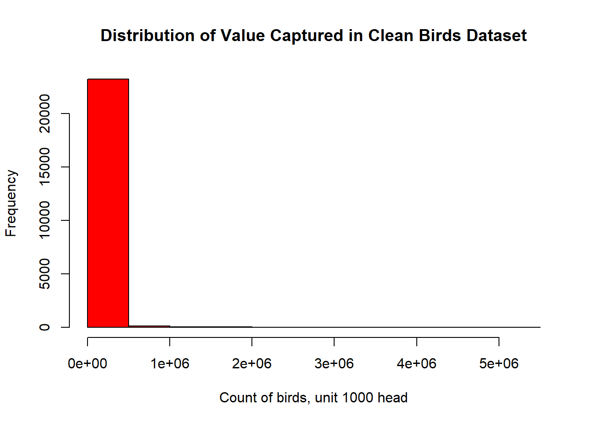

Code
library(tidyverse)
library(stringr)
knitr::opts_chunk$set(echo = TRUE, warning=FALSE, message=FALSE)library(tidyverse)
library(stringr)
knitr::opts_chunk$set(echo = TRUE, warning=FALSE, message=FALSE)Today’s challenge is to
Read in one birds.csv. Evaluate observations to identify any data cleaning steps that might be required including: - removal of non-informative rows/observations - improvement of variable names - removal of non-informative columns - removal of columns with constant values across all observations
birds <-read_csv("_data/birds.csv")
birds# A tibble: 30,977 × 14
Domain Cod…¹ Domain Area …² Area Eleme…³ Element Item …⁴ Item Year …⁵ Year
<chr> <chr> <dbl> <chr> <dbl> <chr> <dbl> <chr> <dbl> <dbl>
1 QA Live … 2 Afgh… 5112 Stocks 1057 Chic… 1961 1961
2 QA Live … 2 Afgh… 5112 Stocks 1057 Chic… 1962 1962
3 QA Live … 2 Afgh… 5112 Stocks 1057 Chic… 1963 1963
4 QA Live … 2 Afgh… 5112 Stocks 1057 Chic… 1964 1964
5 QA Live … 2 Afgh… 5112 Stocks 1057 Chic… 1965 1965
6 QA Live … 2 Afgh… 5112 Stocks 1057 Chic… 1966 1966
7 QA Live … 2 Afgh… 5112 Stocks 1057 Chic… 1967 1967
8 QA Live … 2 Afgh… 5112 Stocks 1057 Chic… 1968 1968
9 QA Live … 2 Afgh… 5112 Stocks 1057 Chic… 1969 1969
10 QA Live … 2 Afgh… 5112 Stocks 1057 Chic… 1970 1970
# … with 30,967 more rows, 4 more variables: Unit <chr>, Value <dbl>,
# Flag <chr>, `Flag Description` <chr>, and abbreviated variable names
# ¹`Domain Code`, ²`Area Code`, ³`Element Code`, ⁴`Item Code`, ⁵`Year Code`head(birds)# A tibble: 6 × 14
Domai…¹ Domain Area …² Area Eleme…³ Element Item …⁴ Item Year …⁵ Year Unit
<chr> <chr> <dbl> <chr> <dbl> <chr> <dbl> <chr> <dbl> <dbl> <chr>
1 QA Live … 2 Afgh… 5112 Stocks 1057 Chic… 1961 1961 1000…
2 QA Live … 2 Afgh… 5112 Stocks 1057 Chic… 1962 1962 1000…
3 QA Live … 2 Afgh… 5112 Stocks 1057 Chic… 1963 1963 1000…
4 QA Live … 2 Afgh… 5112 Stocks 1057 Chic… 1964 1964 1000…
5 QA Live … 2 Afgh… 5112 Stocks 1057 Chic… 1965 1965 1000…
6 QA Live … 2 Afgh… 5112 Stocks 1057 Chic… 1966 1966 1000…
# … with 3 more variables: Value <dbl>, Flag <chr>, `Flag Description` <chr>,
# and abbreviated variable names ¹`Domain Code`, ²`Area Code`,
# ³`Element Code`, ⁴`Item Code`, ⁵`Year Code`tail(birds)# A tibble: 6 × 14
Domai…¹ Domain Area …² Area Eleme…³ Element Item …⁴ Item Year …⁵ Year Unit
<chr> <chr> <dbl> <chr> <dbl> <chr> <dbl> <chr> <dbl> <dbl> <chr>
1 QA Live … 5504 Poly… 5112 Stocks 1068 Ducks 2013 2013 1000…
2 QA Live … 5504 Poly… 5112 Stocks 1068 Ducks 2014 2014 1000…
3 QA Live … 5504 Poly… 5112 Stocks 1068 Ducks 2015 2015 1000…
4 QA Live … 5504 Poly… 5112 Stocks 1068 Ducks 2016 2016 1000…
5 QA Live … 5504 Poly… 5112 Stocks 1068 Ducks 2017 2017 1000…
6 QA Live … 5504 Poly… 5112 Stocks 1068 Ducks 2018 2018 1000…
# … with 3 more variables: Value <dbl>, Flag <chr>, `Flag Description` <chr>,
# and abbreviated variable names ¹`Domain Code`, ²`Area Code`,
# ³`Element Code`, ⁴`Item Code`, ⁵`Year Code`nrow(birds)[1] 30977summary(birds) Domain Code Domain Area Code Area
Length:30977 Length:30977 Min. : 1 Length:30977
Class :character Class :character 1st Qu.: 79 Class :character
Mode :character Mode :character Median : 156 Mode :character
Mean :1202
3rd Qu.: 231
Max. :5504
Element Code Element Item Code Item
Min. :5112 Length:30977 Min. :1057 Length:30977
1st Qu.:5112 Class :character 1st Qu.:1057 Class :character
Median :5112 Mode :character Median :1068 Mode :character
Mean :5112 Mean :1066
3rd Qu.:5112 3rd Qu.:1072
Max. :5112 Max. :1083
Year Code Year Unit Value
Min. :1961 Min. :1961 Length:30977 Min. : 0
1st Qu.:1976 1st Qu.:1976 Class :character 1st Qu.: 171
Median :1992 Median :1992 Mode :character Median : 1800
Mean :1991 Mean :1991 Mean : 99411
3rd Qu.:2005 3rd Qu.:2005 3rd Qu.: 15404
Max. :2018 Max. :2018 Max. :23707134
NA's :1036
Flag Flag Description
Length:30977 Length:30977
Class :character Class :character
Mode :character Mode :character
str(birds)spc_tbl_ [30,977 × 14] (S3: spec_tbl_df/tbl_df/tbl/data.frame)
$ Domain Code : chr [1:30977] "QA" "QA" "QA" "QA" ...
$ Domain : chr [1:30977] "Live Animals" "Live Animals" "Live Animals" "Live Animals" ...
$ Area Code : num [1:30977] 2 2 2 2 2 2 2 2 2 2 ...
$ Area : chr [1:30977] "Afghanistan" "Afghanistan" "Afghanistan" "Afghanistan" ...
$ Element Code : num [1:30977] 5112 5112 5112 5112 5112 ...
$ Element : chr [1:30977] "Stocks" "Stocks" "Stocks" "Stocks" ...
$ Item Code : num [1:30977] 1057 1057 1057 1057 1057 ...
$ Item : chr [1:30977] "Chickens" "Chickens" "Chickens" "Chickens" ...
$ Year Code : num [1:30977] 1961 1962 1963 1964 1965 ...
$ Year : num [1:30977] 1961 1962 1963 1964 1965 ...
$ Unit : chr [1:30977] "1000 Head" "1000 Head" "1000 Head" "1000 Head" ...
$ Value : num [1:30977] 4700 4900 5000 5300 5500 5800 6600 6290 6300 6000 ...
$ Flag : chr [1:30977] "F" "F" "F" "F" ...
$ Flag Description: chr [1:30977] "FAO estimate" "FAO estimate" "FAO estimate" "FAO estimate" ...
- attr(*, "spec")=
.. cols(
.. `Domain Code` = col_character(),
.. Domain = col_character(),
.. `Area Code` = col_double(),
.. Area = col_character(),
.. `Element Code` = col_double(),
.. Element = col_character(),
.. `Item Code` = col_double(),
.. Item = col_character(),
.. `Year Code` = col_double(),
.. Year = col_double(),
.. Unit = col_character(),
.. Value = col_double(),
.. Flag = col_character(),
.. `Flag Description` = col_character()
.. )
- attr(*, "problems")=<externalptr> table(birds$Element)
Stocks
30977 table(birds$`Flag Description`)
Aggregate, may include official, semi-official, estimated or calculated data
6488
Data not available
1002
FAO data based on imputation methodology
1213
FAO estimate
10007
Official data
10773
Unofficial figure
1494 This csv file is pretty straight forward so the focus of cleaning will be on making variable-based content easier to understand. To maintain a means of comparing the steps being completed in this section, I’ll save these changes to a new dataframe.
New dataframe, birds_clean, includes 24,488 rows (30,976 in original) Includes variables: area (internation region), item (bird), year(year observation captured), flag_description (method for capturing value), value (count of birds, unit 1000 heads)
Things to improve in this round
- variable names - remove spaces, anything that doesn’t help with understanding - Remove redundancies: presence of “code” and “code description” variables e.g. “area code” and “area.” The actual code versions, non-English, will not help with this task so taking them out - Remove variables that are constant across all observations: elements (all values are Stocks), domain (all values are Live Animals), unit (all values 1000 head) - Remove rows representing aggregate results
Things I would improve if skill and time permitted
- presence and proportion of missing values (to add). Ideally, I’d like to save these observations to a separate dataframe so there would be an opportuity to analyze this data and determine whether removing is appropriate/retaining provides information necessary to understanding case - recode value of flag_description to change “Data not available FAO data based on imputation methodology” to “imputed” at a later date maybe
birds <-read_csv("_data/birds.csv"
, skip =2
, col_names = c("Delete_Domain_Code", "Delete_domain", "Delete_Area_Code", "area", "Delete_Element_Code", "Delete_element", "Delete_Item_Code", "item", "Delete_Year_Code", "year", "Delete_unit", "value", "Delete_Flag", "flag_description"))
birds_clean <- select(birds, !contains("Delete"))
birds_clean <-birds_clean[!grepl("Aggregate", birds_clean$flag_description),]
nrow(birds)[1] 30976nrow(birds_clean)[1] 24488This dataframe represents the count (unit 1000) of live birds by region (international, not country based), and method for capture of information and year. - Area are international and not limited to countries - Dataset spans years (varname =year) 1961-2018 - Captures counts for the following types of birds (varname = item): chickens; turkey; ducks; geese and guinea fowl; pigeons & other birds. - Employed the following methods for data capture (flag_description: estimation, imputation, official collection, unofficial figure. When data was not available, the method is specified as “Data not available”
Please see figures below for detail on distribution of these variable specific to their capture, not by “value” variable: - data capture consistently across areas - majority of birds characterized are chickens - observations distributed relatively consistently across years - values are very skewed in their distribution - most values were captured officially or was an FAO estimate
summary(birds_clean) area item year value
Length:24488 Length:24488 Min. :1961 Min. : 0
Class :character Class :character 1st Qu.:1976 1st Qu.: 118
Mode :character Mode :character Median :1992 Median : 1200
Mean :1991 Mean : 31683
3rd Qu.:2005 3rd Qu.: 10612
Max. :2018 Max. :5274475
NA's :1002
flag_description
Length:24488
Class :character
Mode :character
str(birds_clean) tibble [24,488 × 5] (S3: tbl_df/tbl/data.frame)
$ area : chr [1:24488] "Afghanistan" "Afghanistan" "Afghanistan" "Afghanistan" ...
$ item : chr [1:24488] "Chickens" "Chickens" "Chickens" "Chickens" ...
$ year : num [1:24488] 1962 1963 1964 1965 1966 ...
$ value : num [1:24488] 4900 5000 5300 5500 5800 6600 6290 6300 6000 6000 ...
$ flag_description: chr [1:24488] "FAO estimate" "FAO estimate" "FAO estimate" "FAO estimate" ...birds_clean%>%
select(area)%>%
n_distinct(.)[1] 220table(birds_clean$area)
Afghanistan
57
Albania
232
Algeria
232
American Samoa
58
Angola
58
Antigua and Barbuda
58
Argentina
232
Armenia
54
Aruba
29
Australia
174
Austria
232
Azerbaijan
54
Bahamas
58
Bahrain
58
Bangladesh
116
Barbados
116
Belarus
81
Belgium
76
Belgium-Luxembourg
156
Belize
174
Benin
58
Bermuda
110
Bhutan
58
Bolivia (Plurinational State of)
174
Bosnia and Herzegovina
108
Botswana
58
Brazil
174
Brunei Darussalam
116
Bulgaria
232
Burkina Faso
58
Burundi
86
Cabo Verde
58
Cambodia
116
Cameroon
58
Canada
232
Cayman Islands
53
Central African Republic
116
Chad
58
Chile
116
China, Hong Kong SAR
279
China, Macao SAR
58
China, mainland
174
China, Taiwan Province of
232
Colombia
58
Comoros
58
Congo
58
Cook Islands
109
Costa Rica
58
Côte d'Ivoire
86
Croatia
108
Cuba
58
Cyprus
277
Czechia
104
Czechoslovakia
128
Democratic People's Republic of Korea
116
Democratic Republic of the Congo
58
Denmark
232
Dominica
58
Dominican Republic
58
Ecuador
232
Egypt
290
El Salvador
58
Equatorial Guinea
116
Eritrea
26
Estonia
108
Eswatini
58
Ethiopia
26
Ethiopia PDR
32
Falkland Islands (Malvinas)
58
Fiji
174
Finland
166
France
290
French Guyana
116
French Polynesia
116
Gabon
58
Gambia
58
Georgia
54
Germany
232
Ghana
58
Greece
290
Grenada
58
Guadeloupe
154
Guam
58
Guatemala
58
Guinea
58
Guinea-Bissau
58
Guyana
58
Haiti
232
Honduras
58
Hungary
232
Iceland
58
India
116
Indonesia
116
Iran (Islamic Republic of)
232
Iraq
58
Ireland
232
Israel
212
Italy
116
Jamaica
58
Japan
116
Jordan
248
Kazakhstan
54
Kenya
58
Kiribati
58
Kuwait
58
Kyrgyzstan
108
Lao People's Democratic Republic
174
Latvia
54
Lebanon
92
Lesotho
58
Liberia
116
Libya
58
Liechtenstein
58
Lithuania
108
Luxembourg
19
Madagascar
232
Malawi
58
Malaysia
116
Mali
58
Malta
164
Martinique
160
Mauritania
58
Mauritius
232
Mexico
174
Micronesia (Federated States of)
56
Mongolia
58
Montenegro
13
Montserrat
58
Morocco
116
Mozambique
232
Myanmar
290
Namibia
116
Nauru
58
Nepal
116
Netherlands
166
Netherlands Antilles (former)
58
New Caledonia
58
New Zealand
232
Nicaragua
58
Niger
58
Nigeria
58
Niue
58
North Macedonia
27
Norway
174
Oman
86
Pacific Islands Trust Territory
60
Pakistan
116
Palestine
58
Panama
174
Papua New Guinea
174
Paraguay
232
Peru
58
Philippines
232
Poland
232
Portugal
131
Puerto Rico
58
Qatar
58
Republic of Korea
228
Republic of Moldova
54
Réunion
157
Romania
232
Russian Federation
108
Rwanda
128
Saint Helena, Ascension and Tristan da Cunha
58
Saint Kitts and Nevis
58
Saint Lucia
58
Saint Pierre and Miquelon
92
Saint Vincent and the Grenadines
58
Samoa
58
Sao Tome and Principe
174
Saudi Arabia
89
Senegal
58
Serbia
52
Serbia and Montenegro
56
Seychelles
116
Sierra Leone
116
Singapore
116
Slovakia
104
Slovenia
108
Solomon Islands
58
Somalia
58
South Africa
232
South Sudan
7
Spain
176
Sri Lanka
116
Sudan
7
Sudan (former)
51
Suriname
116
Sweden
116
Switzerland
232
Syrian Arab Republic
290
Tajikistan
27
Thailand
174
Timor-Leste
58
Togo
58
Tokelau
58
Tonga
58
Trinidad and Tobago
58
Tunisia
93
Turkey
232
Turkmenistan
54
Tuvalu
58
Uganda
58
Ukraine
108
United Arab Emirates
58
United Kingdom of Great Britain and Northern Ireland
232
United Republic of Tanzania
116
United States of America
174
United States Virgin Islands
58
Uruguay
232
USSR
62
Uzbekistan
54
Vanuatu
58
Venezuela (Bolivarian Republic of)
58
Viet Nam
116
Wallis and Futuna Islands
58
Yemen
58
Yugoslav SFR
124
Zambia
58
Zimbabwe
174 birds_clean%>%
select(item)%>%
n_distinct(.)[1] 5table(birds_clean$item)
Chickens Ducks Geese and guinea fowls
11480 5316 2891
Pigeons, other birds Turkeys
527 4274 birds_clean%>%
select(flag_description)%>%
n_distinct(.)[1] 5table(birds_clean$flag_description)
Data not available
1002
FAO data based on imputation methodology
1213
FAO estimate
10006
Official data
10773
Unofficial figure
1494 print(summarytools::dfSummary(birds_clean,
varnumbers = FALSE,
plain.ascii = FALSE,
style = "grid",
graph.magnif = 0.70,
valid.col = FALSE),
method = 'render',
table.classes = 'table-condensed')| Variable | Stats / Values | Freqs (% of Valid) | Graph | Missing | |||||||||||||||||||||||||||||||||||||||||||||||||||||||
|---|---|---|---|---|---|---|---|---|---|---|---|---|---|---|---|---|---|---|---|---|---|---|---|---|---|---|---|---|---|---|---|---|---|---|---|---|---|---|---|---|---|---|---|---|---|---|---|---|---|---|---|---|---|---|---|---|---|---|---|
| area [character] |
|
|
 |
0 (0.0%) | |||||||||||||||||||||||||||||||||||||||||||||||||||||||
| item [character] |
|
|
 |
0 (0.0%) | |||||||||||||||||||||||||||||||||||||||||||||||||||||||
| year [numeric] |
|
58 distinct values |  |
0 (0.0%) | |||||||||||||||||||||||||||||||||||||||||||||||||||||||
| value [numeric] |
|
7864 distinct values |  |
1002 (4.1%) | |||||||||||||||||||||||||||||||||||||||||||||||||||||||
| flag_description [character] |
|
|
 |
0 (0.0%) |
Generated by summarytools 1.0.1 (R version 4.2.2)
2023-03-01
hist( birds_clean$value
, main="Distribution of Value Captured in Clean Birds Dataset"
, xlab="Count of birds, unit 1000 head"
, col = "red")
Evaluate the distribution of value by year, item, flag_description. Do so to eyeball any major differences across that should be further investigated. Omit area because too granular to visualize
birds_clean %>%
group_by(year) %>%
summarise(mean_value = mean(value, na.rm=T), sd_value = sd(value, na.rm=T), med_value = median(value, na.rm=T), min_value = min(value, na.rm=T), max_value = max(value, na.rm=T))
counts <- table(birds_clean$(year))
barplot(value, main="Distribution of Value by Year"
xlab="Number of Gears")
birds_clean %>%
group_by(item) %>%
summarise(mean_value = mean(value, na.rm=T), sd_value = sd(value, na.rm=T), med_value = median(value, na.rm=T), min_value = min(value, na.rm=T), max_value = max(value, na.rm=T))
birds_clean %>%
group_by(flag_description) %>%
summarise(mean_value = mean(value), sd_value = sd(value), med_value = median(value), min_value = min(value), max_value = max(value))Error: <text>:6:29: unexpected '('
5:
6: counts <- table(birds_clean$(
^